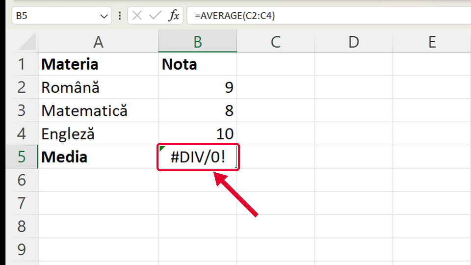
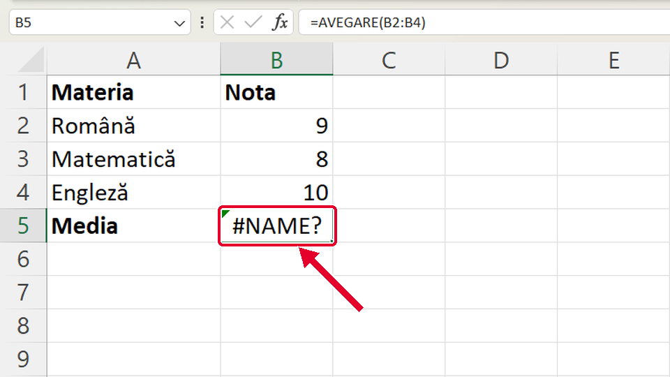
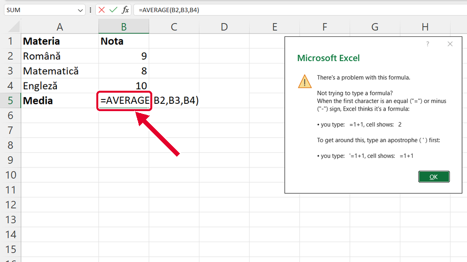

Început
Media cu funcția AVERAGE
Taste: Spațiu = pauză / continuă · ← și → = pasul anterior / următor · cu Tab ajungi la „Rulează singur”; acolo Spațiu îl pornește sau îl oprește. Poți apăsa și pe film.

Legat de asta
Se deschid într-o filă nouă, ca să nu pierzi filmul de aici.
- ÎnainteCum scrii o formulă ↗
Întâi vezi cum scrii o formulă simplă: începe cu semnul =.
- ApoiSuma cu un singur buton ↗
Suma are buton: Σ Însumare automată (AutoSum) scrie singur =SUM(...).
- ApoiFuncția IF: o decizie într-o celulă ↗
O funcție care alege singură ce arată celula: IF, cu o condiție și două rezultate.
Dacă nu-ți iese
Alege ce vezi pe ecran.
În celulă apare #DIV/0! (împărțire la zero).

De ce: Ai ales celule goale (C2:C4) în loc de note (B2:B4). Media împarte suma la câte numere găsește, iar aici nu găsește niciunul.
Ce faci:
- Dai clic pe celulă și te uiți în bara de formule ce celule ai ales.
- Scrii formula din nou cu celulele notelor: =AVERAGE(B2:B4).
- Apeși Enter.
Taste: Enter
În celulă apare #NAME? (eroare de nume).

De ce: Numele funcției e scris greșit (AVEGARE în loc de AVERAGE). Excel nu cunoaște funcția.
Ce faci:
- Dai clic pe celulă și te uiți sus, în bara de formule, la numele funcției.
- Scrii formula din nou. Tastezi =AVER: Excel îți arată lista funcțiilor care încep așa, iar AVERAGE e prima și e deja aleasă.
- Apeși Tab (sau dai dublu-clic pe AVERAGE în listă): Excel scrie singur =AVERAGE(.
- Scrii aceeași zonă ca înainte (în poză B2:B4), închizi paranteza ) și apeși Enter.
- Atenție: dacă tastezi doar =AV și apeși Tab, Excel alege AVEDEV, altă funcție. Ea dă alt număr, fără nicio eroare.
Taste: Tab · Enter
Apeși Enter și apare o fereastră care începe cu „There's a problem with this formula.” (în Office-ul românesc, mesajul apare în română).

De ce: Între valori ai pus virgulă, dar Excel-ul tău desparte valorile cu punct și virgulă (;). Pe calculatoarele cu setări românești virgula înseamnă zecimale (4,5), așa că Excel nu înțelege formula. Pe calculatoarele cu setări în engleză e invers: acolo se pune virgulă, iar ; dă eroare.
Ce faci:
- Apeși OK (sau Esc) ca să închizi fereastra.
- În formulă, pui ; în loc de , între valori: =AVERAGE(B2;B3;B4). Dacă ai pățit invers (ai scris ; și Excel-ul tău cere ,), pui virgulă: =AVERAGE(B2,B3,B4). Sau, mai simplu, scrii zona =AVERAGE(B2:B4), cu două puncte: merge pe orice calculator.
- Apeși Enter.
- Ca să afli ce cere Excel-ul tău, uită-te la indicația care apare sub celulă când scrii =AVERAGE( : acolo vezi număr1; sau număr1, (în Office-ul în engleză: number1; sau number1,).
Taste: Esc · Enter